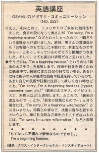

新米なものですから。
The other day, my wife and I were invited to dinner at the home of an American couple. When it was time for dinner the wife said things like, ¨I´m sorry. I´m a beginning hostess,¨ and I was confused for a moment about what she meant. Eventually, I guessed from her demeanor that she meant that she was inexperienced at serving guests and was new at it. I thought that this was an interesting expression. Yes, ¨I´m a beginning hostess¨ means ¨I´m a novice hostess.¨ When you are still in the middle of polishing your technique or refining your skill and you still don´t have confidence in your ability, or the other person has superior skills or abilities so you don´t want to call attention to yourself, you can express this by saying, ¨Iḿ sorry, I´m a beginning hostess (typist, carpenter, cook, etc.).¨ Even so, you wouldn´t say, ¨I´m a beginning wife or mother.¨ Being a wife or a mother doesn´t require the acquisition of a skill but, rather, simply indications a social position, so you would express this by saying, ¨I´m sorry, I´m a new wife/mother.¨
先日、家内と共に、アメリカ人のご家庭に招待されました。食事の段になって、奥さんが、" I'm sorry. I'm a beginning hostess." などとおっしゃったので、一瞬、どういう意味かと戸惑いました。結局、奥さんの雰囲気から、「お客様へのもてなしに不慣れで、新米なものですから・・・」とおっしゃっているのだろうと推測がつきました。そして、とても面白い表現だなと思いました。
そうですね、" I'm a beginning hostess. " というのは、「新米のホステス（女主人）」を意味します。技術や技量を磨くために勉強中で、腕前にまだ自信の持てない場合、あるいは、時に、相手の人が優秀な技術や技量を持っているので、あまり自分の技術や技量に注目して欲しくない時などにも、" I'm sorry. I'm a beginning hostess ( typist, carpenter, cook, etc.)" （新米のホステス、タイピスト、大工、料理人など）と表現します。
ところで、「新米の妻なもので・・・」とか、「新米の母親なもので・・・」と言う場合には、" I'm sorry. I'm a beginning wife/mother. " とは言いません。母親とか妻など、技術の習得を要するというより、単に社会的な立場を示すにすぎないものには、" I'm sorry. I'm a new wife/mother." などと表現します。
もてなしに不慣れで新米なものですから。
I'm a beginning hostess.

| © 1995-2013 NACOS International Institute. All Rights Reserved. |